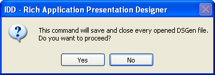
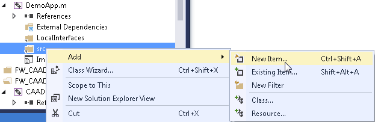
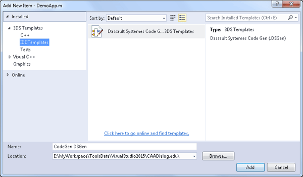
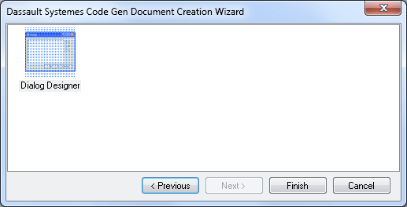

Starting Rich Application Presentation Designer |
| Technical Article |
AbstractThe purpose of this article is to explain how to prepare a proper workspace environment to run the Rich Application Presentation Designer, and how to create a new dialog box design file. |
| Warning: Note that with Windows, the Rich Application Presentation Designer requires the folder C:\temp. Make sure this folder exists on your computer. |
The Rich Application Presentation Designer is designed to work in a development environment. The first step is to open or create a workspace:
Now that we are in a valid edition context, we must update the workspace prerequisites if necessary, so that they include the designer resources. You can modify those prerequisites using the RADE customization menu:
Your concatenation path should at least contain the folder into which the Dassault Systèmes' solutions and products run time and API CD-ROMs were unloaded, usually C:\Program Files\Dassault Systemes\B28.
If you change your prerequisites after creating or opening an Rich Application Presentation Designer file, the designer must be refreshed to be able to use the new resources found in the changed prerequisites. This can be done using the 'Refresh IDD Definitions' command, located in the Project menu of Visual Studio:
This command must first close any opened Rich Application Presentation Designer file, and will prompt the user to save and close those file before refreshing the environment:

Remark: The Rich Application Presentation Designer environment is automatically refreshed when a new workspace is opened.
To create a new Dialog file handled by the application, you can call the creation wizard. This wizard is located in the standard Visual Studio ‘Add New Item’ dialog. To invoke it, use the contextual menu in the Solution Explorer window, on the ‘src’ folder that will contain the generated file:

Then in the ‘Add new item’ dialog, select the Dassault Systemes Code Gen File category, where you will find the Creation wizard:

Once the name of the created file is fixed, click ‘Add’ to launch the wizard.
In the creation wizard, just click ‘Finish’ to select the Dialog Designer template, and create a new dialog box.

The designer will automatically generate the C++ files (header and implementation) associated to a designed dialog box. However, it will not handle other files in the project that may need an update for the dialog box to work properly. In particular:
| Version: 2 [Jul 2017] | Update for V5-6R2018 and Visual Studio 2015 |
| Version: 1 [Jul 2007] | Document created |